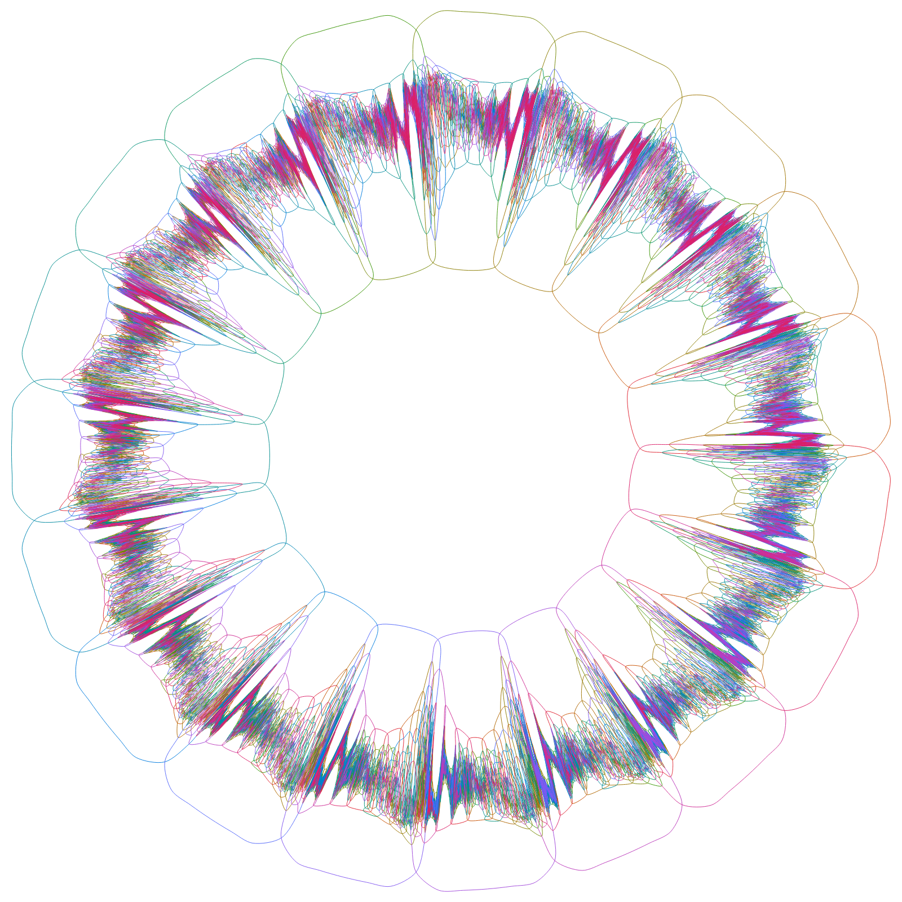

Diagrammata Venniana simplicia symmetrica
Diagramma Vennianum n curvarum pro unoquoque ex 2n modis, quibus punctum intra extrave singulas curvas iacere potest, unam regionem continuam habet. Simplex est, si nusquam tres curvae concurrunt, et tum 2n − 2 intersectiones habet. Symmetricum est, si conversione unius n-tae partis circuli in se ipsum transit.
Symmetricum esse non potest nisi n numerus primus sit (Henderson 1963; demonstrationem plenam dederunt Wagon et Webb 2008), et pro quoque numero primo exstat (Griggs, Killian, Savage 2004), sed haec simplicia non sunt. Simplicia et symmetrica usque ad n = 13 tantum nota erant (Mamakani et Ruskey 2014), donec Chris Dzoba, Claude et Codex adhibitis, mense Septembri 2026 diagrammata 17 et 19 curvarum, mense Octobri 23 curvarum invenit.
Infra unum diagramma pro quoque numero primo ostenditur. Imagine pressa forma vectoria aperitur, quae sine fine augeri potest.
3
Tres circuli: Venn 1880. 8 regiones, 6 intersectiones.

5
Quinque ellipses congruentes: Grünbaum 1975. 32 regiones, 30 intersectiones.

7
“Hamilton”, ab A. W. F. Edwards inventum et nominatum (1998), unum e 23 diagrammatibus simplicibus symmetricis monotonis septem curvarum (Mamakani, Myrvold, Ruskey 2012). 128 regiones, 126 intersectiones.

11
“Newroz”, primum diagramma simplex symmetricum undecim curvarum: Mamakani et Ruskey 2012. 2048 regiones, 2046 intersectiones.

13
Primum diagramma simplex symmetricum tredecim curvarum: Mamakani et Ruskey 2014. 8192 regiones, 8190 intersectiones.

17
Unum e quattuor diagrammatibus septendecim curvarum, quae Claude et Codex duce Chris Dzoba mense Septembri 2026 invenerunt; hoc (venn17-local-c3-s2) Justin Grimes in Lean 4 probavit. 131 072 regiones, 131 070 intersectiones.

19
Unum e duodecim diagrammatibus undeviginti curvarum eodem modo mense Septembri 2026 inventis; hoc quoque (venn19-closure-s196002) in Lean 4 probatum est. 524 288 regiones, 524 286 intersectiones.

23
Sex diagrammata viginti trium curvarum diebus 5 et 6 Octobris 2026 inventa sunt (Dzoba). Certificata eorum, singula 889 MB, die 6 Octobris 2026 nondum publice praesto erant, itaque hic nihil delineatum est. 8 388 608 regiones, 8 388 606 intersectiones.